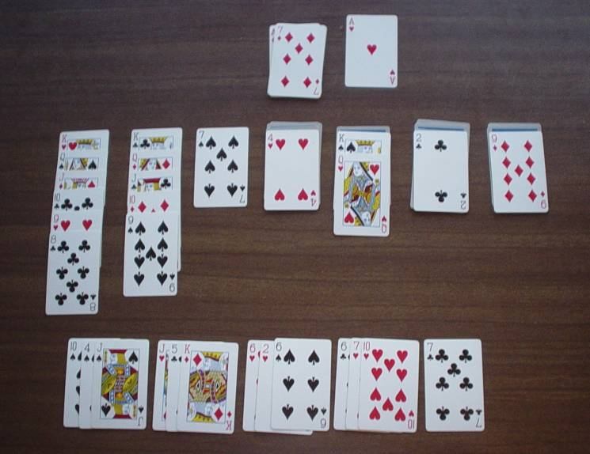
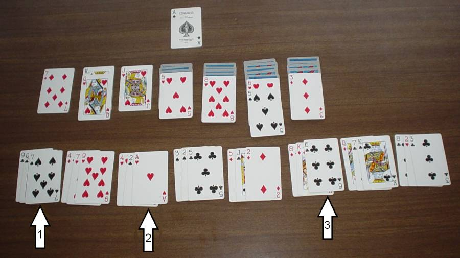

|
This article is about the solitaire so widespread that most people simply refer to it as “Solitaire.” It comes installed on every new desktop and laptop computer. It is on practically every PDA, cell phone, and other small device. And there are even reports (though not confirmed) that there are still people who play it using playing cards. This game can be played with no brains whatsoever, which is probably the reason for its vast popularity. Most people do play it without any thought: They go through the stock pile and make every play that presents itself. They never consider not making a play, and they never have to make a choice. They have a lot of dumb fun and win about 1 in 8 games. There is, however, a minority of players who realize there is more to this game. They know that there are times when you should not make a play, and they know you can manipulate the stock pile so that the cards you want will turn up. In this article, I hope to expand on these techniques and present a strategy for this game. I hope to show that this is a complex game with many intellectual challenges. (And if you’re someone who thinks that Spider is the most intelligent solitaire, maybe I can change your mind.) If you use the techniques presented here, you could win better than 1 in 4 games. First I should explain exactly what game I’m talking about. Whenever this game is given a specific name, it is usually “Klondike.” Most card games are hard to pin down because they have many variations. The version I’m referring to here is the one in which you deal three cards at a time from the stock. Most people in America play that version, though most game books say that dealing one card is standard and dealing three is a variation. One recent book says dealing three is standard and dealing one is a variation. You should be able to go through the stock as many times as you want, though some books say you can only go through it three times and some books say you can only do it once. I have two books that say that if an ace appears from the stock, you must immediately play it on the build. (“Build” refers to the cards built up over the aces.) That is a ridiculous rule and should be ignored. Also, you should be able to move cards from the build back to the tableau. (“Tableau” refers to the seven piles in front of you.) Probably the best standard reference for Klondike is the program for the game that has been included with every Microsoft operating system since 1990. If you use that, or a similar program, be sure to choose the option to deal three cards at a time. And don’t choose “Vegas” scoring, because it usually restricts how many times you can go through the stock. It’s also good to have a program that lets you take back the latest move (though, of course, it shouldn’t let you take back a move if you turned over a card on the tableau). The best way to start my discussion of strategy is with a puzzle. This came from a game I was playing. I seemed to be at a point where I didn’t have any good play to make, so I stopped to study the layout, which is shown here: |

|
After looking at this layout for a long time, I figured out that there was a way I could turn over one of the face-down cards on the tableau. Turning over a face-down card is usually the best move you can make, and it might lead to other moves. So the puzzle is: how can I turn over one of the face-down cards? This is a fairly difficult puzzle, but give it a try. Here is a hint and here is the solution. In this puzzle, you have complete knowledge of the stock pile and you can take all the time you want to figure out the best move to make. Actually, in most games you play, you eventually reach a state like this. The stock pile has been reduced to a small size so it’s easy to understand, and you are not presented with a number of confusing choices. You can therefore figure out the best play to make. Either that, or you see that you have no play to make and you’ve lost the game. At the beginning of a game, you have nothing like this state of complete understanding. The stock starts with 24 cards, and you have a large array of choices. Figuring out the absolute best moves here is beyond human understanding. (I wonder if a computer could understand it. If anyone programs this, let us know how it works out and what percentage of games the computer wins.) The strategy I worked out for Klondike is meant to help you through this initial state of confusion. Later, when you have a narrower range of choices, when you have have complete understanding of all (or at least some) of what your current game involves, then you can abandon the strategy and instead attack the game as a puzzle. So, here is my strategy: First you make all the plays that are available on the tableau that was dealt you (that part is obvious). If you have a choice between, for instance, taking the 4 off the top of a small pile versus taking the 4 off the top of a larger pile, then pick the move that reduces the larger pile. Next you will start making repeated trips through the stock pile, and you will make decisions about which plays to make. To make these decisions, you need an evaluation of what is a good move, and here are my recommendations: The absolute top priority is a move that results in the exposure of one of the face-down cards on the tableau. A medium priority is a move that adds cards to the build. A low priority (but still valuable) is the move of some cards from the stock to the tableau. Putting new cards on the tableau can increase the probability of a top priority move turning up. However, you should not move just any card to the tableau. You should not make a move that decreases the possibility of a top priority move turning up. You don’t want to, say, move a 4 from the stock onto a 5 if there is a chance that the 4 will later turn up on the top of a stack. The 4 will probably now have no place to go, and you have lost the chance to expose a card. The 4 and 4 could be considered to be twins, two cards of the same number and same color. Here then is a general rule for making a low-priority move of a card to the tableau: You can make the move if you see that the twin of the card you are moving is already on the tableau. You can also make the move if the twin is somewhere else in the stock. In either of these cases, you can be assured that the twin will not turn up on top of one of the piles of face-down cards. You can also, for example, move an 8 on top of a 9 and there is a 9 somewhere else on the tableau. If an 8 turns up on top of a stack, it will already have someplace to go. Sometimes you will play a card just to change the configuration of the stock pile, and then you don’t care much about the priority of your move. And, of course, if you have only one move left to make, then that’s the move you have to make. Finally I can get to the heart of the strategy, which is how you go through the stock pile. The example below shows a layout near the start of a game. You have already made the moves that were initially available on the tableau, but you have not yet gone through the stock pile. |

|
At the beginning of a game, you make one pass through the stock in observation mode. In this example, what you learn is shown at the bottom of the picture. Here you see the entire stock divided into sets of three cards each. You should also learn that you can make three useful moves, which are indicated here by the three arrows. Arrows 1 and 3 point to moves that would be top priority, and arrow 2 points to a medium priority move. Next, you make a pass through the stock in execution mode, and now we get into the revolutionary part of this strategy: You should not make moves 1 or 2 but should initially just make move 3. In general, you should make moves from the end of the stock before you make moves near the start of the stock. You’re probably asking, why would anyone do such a thing? Basically it is to increase the shuffling (or re-ordering) of the stock. The more the stock is changed, the greater the chances of valuable new moves popping up. This needs further clarification: If you made one complete pass through the stock and made all the three moves that the arrows point to, then you would have made one change to the configuration of the stock. Maybe with the new configuration you will have other moves, or maybe not. However, if you make only move 3, you will have changed the configuration of the cards to the right of arrow 3. Then when you make move 2, you will change the configuration of the cards to the right of arrow 2, and you will also make a second change to the configuration of the cards to the right of arrow 3. When you make move 1, you will change the configuration to the right of arrow 1, you will make a second change to the cards on the right of arrow 2, and you will make a third change to the cards on the right of arrow 3. Back to the example: You are in execution mode and you have just made move 3: you play the 6 on the 7, move the 5 onto the 6, then turn over the card that had been under the 6. You should then continue through the stock and, because the tableau has changed, you might encounter other possible moves. You probably should take them, because the next time through the stock, different cards will appear. Or maybe you should not make these moves. At this point you can’t go back and look through the entire stock to make your decision, so instead, you have to rely on your memory. This puts you in a state where you’re not sure what to do. In real life, that’s a bad thing. In a game, it can be sort of fun. After you have completed the execution pass, you should then do another pass in observation mode. This is necessary because things have now changed. Then next you do another pass in execution mode, and again you should make whatever move is closest to the end of the stock. That might be the move at arrow 2, or maybe another move has popped up that is nearer to the end. Eventually you will get to move 2 and move 1, or maybe not. It might be that things have changed so much that move 1 is no longer possible. But that should be a good thing, because it means you found moves that are better than move 1. There are some exceptions to the strategy of first making moves near the end of the stock. Sometimes you could make a top-priority play using, say, a 10 that is showing near the end of the stock; however, the 10 is showing near the start of the stock and it could make the same play. Usually it is better to wait and make the play with the 10. Along these same lines, notice that arrow 1 in the picture points to a 7, which can be used in a top-priority play. There is also a 7 buried near the end of the stock. The 7 will pop up sometime during an execution pass, and you’ll be tempted to play it. You should resist that temptation and wait until you play the 7. Of course, that means you have to remember that you have the Here is another exception: Sometimes playing a card near the start of the stock will make possible an important play near the end. It might be a good strategy to play the card near the start, then make all subsequent plays, including the play near the end. And one more exception: During an observation pass, you might encounter a group of three cards, all three of which would make good plays. If you want, you could make these plays immediately, because playing three cards does not re-order the remainder of the stock. Actually, all the rules in this article have exceptions, and I could go on here forever, so I’d better stop now. I wrote this article in November of 2009, and submitted it to GAMES magazine. They published it in their issue with the cover date of April, 2010. Since last November, I have continued to play solitaire. I haven’t run across any complex puzzles like the one presented in this article; however, on each game I usually come across two or three small puzzles. I would appreciate receiving any comments you might have, especially ones I can include in a comments section. My e-mail is: |